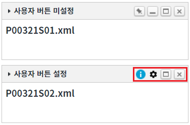

WidgetContainer의 함수 'addWidgets'로 위젯을 추가할 때, 우측 상단의 버튼 영역에 사용자 버튼을 지정하거나 기본 기능 버튼의 사용 여부를 설정하는 예제입니다. 함수 'addWidgets'의 첫 번째 인자의 위젯 옵션 'buttonFormatter'을 사용하여 구현할 수 있습니다.
위젯 추가 시 우측 상단에 사용자 버튼 설정하기
STEP 1. 초기 상태를 확인합니다.
WidgetContainer에 위젯 옵션 'buttonFormatter'이 지정되지 않은 기본 형식의 위젯이 추가되어있습니다.
그림 1.브라우저(Chrome) 실행 예시
STEP 2. 사용자 버튼을 정의하여 위젯 추가하기
버튼 위젯 추가하기 - 우측 상단에 사용자 버튼 설정을 클릭합니다.STEP 3. 실행된 결과를 확인합니다.
위젯의 타이틀이 '사용자 버튼 설정'인 위젯이 추가됩니다. 위젯의 우측 상단에 사용자 버튼 2개와 기능 버튼 '최대화, '닫기'가 표시됩니다.
그림 2.브라우저(Chrome) 실행 예시

STEP 1. CSS class 정의하기
함수 'addWidgets'의 인자 위젯 옵션의 'buttonFormatter'에서 사용할 class 명은 다음과 같습니다.
P00321_w2widget_btnInfo
P00321_w2widget_btnSetting
css 파일에 아래의 예시를 참고하여 class를 정의합니다. (class명의 중복을 피하기 위해 상위 element의 class명 'w2widget_title_buttons'을 함께 사용하였습니다.)
/* '[프로젝트]/css/example.css'에서 확인할 수 있습니다. */ /* P00321.xml 우측 상단의 사용자 버튼 class 정의 */ .w2widget_title_buttons > .P00321_w2widget_btnInfo{position: relative; width: 19px; height: 17px; cursor: pointer; background: url('/img/icon_info.png') center 50%/15px 15px no-repeat;} .w2widget_title_buttons > .P00321_w2widget_btnSetting{position: relative; width: 17px; height: 17px; cursor: pointer; background: url('/img/btn_sub_setting.png') center 50%/15px 15px no-repeat;}
STEP 2. 위젯 옵션에 사용자 버튼 지정하기
WidgetContainer의 함수 'addWidgets'를 이용하여 스크립트를 작성합니다. 함수 'addWidgets'의 첫 번째 인자에 위젯 정보가 담긴 JSON을 정의합니다. 첫 번째 인자 위젯 옵션의 'buttonFormatter'에 함수 객체 또는 함수명을 지정합니다. 지정한 함수에서는 우측 상단 영역에 구성할 버튼의 정보가 담긴 배열을 반환합니다. 세부 스크립트는 아래의 예시에 작성되어 있습니다.
스크립트
// 위젯 생성 옵션 정보 let widgetOptions = {}; /** * [필수] 위젯의 우측 상단의 기능 버튼들의 설정을 반환할 함수 또는 함수의 이름 * @param {string} argWidgetID Widget의 Runtime ID */ widgetOptions.buttonFormatter = function (argWidgetID) { // 우측 상단에 출력할 버튼의 정보를 Array로 반환합니다. // 사용자 버튼 2개와 기능 버튼 '최대화', '닫기'를 배치합니다. return [ { 'id': 'btn_info', // 버튼의 ID. WidgetContainer의 이벤트 'onclickcustombtn' 핸들러에서 ID로 구분하여 로직을 구성합니다. 'className': 'P00321_w2widget_btnInfo', // 버튼의 class. 정의한 class는 '[프로젝트]/css/example.css'에서 확인할 수 있습니다. 'isCustom': true // 사용자 버튼 여부 }, { 'id': 'btn_setting', // 버튼의 ID. WidgetContainer의 이벤트 'onclickcustombtn' 핸들러에서 ID로 구분하여 로직을 구성합니다. 'className': 'P00321_w2widget_btnSetting', // 버튼의 class. 정의한 class는 '[프로젝트]/css/example.css'에서 확인할 수 있습니다. 'isCustom': true // 사용자 버튼 여부 }, { 'useDefault': 'maximize' // '최대화' 버튼 사용. (위젯 기본 기능 버튼 지정. 'fix': 고정, 'minimize': 최소화, 'maximize': 최대화, 'close': 닫기) }, { 'useDefault': 'close' // '닫기' 버튼 사용 (위젯 기본 기능 버튼 지정. 'fix': 고정, 'minimize': 최소화, 'maximize': 최대화, 'close': 닫기) } ]; }; // [필수] 위젯 ID. 동일한 ID를 가진 위젯이 있으면 추가되지 않습니다. widgetOptions.id = "wg_exam2"; // [필수] 위젯 파일 경로 widgetOptions.src = "/page/P00321S02.xml"; // [필수] scope 적용 여부로 true 고정 widgetOptions.scope = true; // [필수] 위젯 너비 : (설정 값 / WidgetContainer의 속성 'col'의 설정 값 * 100)으로 '%'단위로 그려집니다. widgetOptions.unitWidth = 1; // [필수] 위젯 높이 : (설정 값 * WidgetContainer의 속성 'unitHeightPixel'의 설정 값)으로 'px'단위로 그려집니다. widgetOptions.unitHeight = 5; // [권장] 위젯 타이틀 widgetOptions.title = "사용자 버튼 설정"; // 위젯의 x 위치 widgetOptions.x = 0; // 위젯의 y 위치 widgetOptions.y = 6; // WidgetContainer 'wgc_exam1'에 위젯 1개를 추가합니다. wgc_exam1.addWidgets(widgetOptions);
STEP 3. 사용자 버튼의 클릭 이벤트 핸들러 정의하기
WidgetContainer의 이벤트 'onclickcustombtn'에 핸들러를 정의합니다. 핸들러에서는 위젯의 Runtime ID와 버튼의 ID를 파라미터로 받을 수 있습니다. 세부 스크립트는 아래의 예시에 작성되어 있습니다.
스크립트 - 이벤트 'onclickcustombtn' 핸들러
/** * WidgetContainer 'wgc_exam1'의 이벤트 'onclickcustombtn' 핸들러. * 우측 상단의 사용자 정의 버튼 클릭 시 호출. * (함수 'addWidgets'의 인자 위젯 옵션의 'buttonFormatter'에 정의 한 함수에서 반환한 사용자 버튼) * @param {string} id Widget의 Runtime ID * @param {string} btnId 우측 상단의 사용자 버튼의 ID */ scwin.wgc_exam1_onclickcustombtn = function (id, btnId) { switch (btnId) { case "btn_info": alert("정보 버튼 클릭"); break; case "btn_setting": alert("설정 버튼 클릭"); break; default: break; } };
그림 3.[웹스퀘어5 SP5 스튜디오의 Property View(속성창)의 이벤트 탭 예시]
<!-- widgetContainer 의 소스 본문 예시 --> <w2:widgetContainer ev:onclickcustombtn="scwin.wgc_exam1_onclickcustombtn" id="wgc_exam1"> </w2:widgetContainer>
addWidgets( option )
option.buttonFormatter
onclickcustombtn
[웹스퀘어5 SP5 개발 가이드] WidgetContainer
링크 : https://docs1.inswave.com/sp5_user_guide/2059d4ce88b2fc16#6f01c6c535be09d8